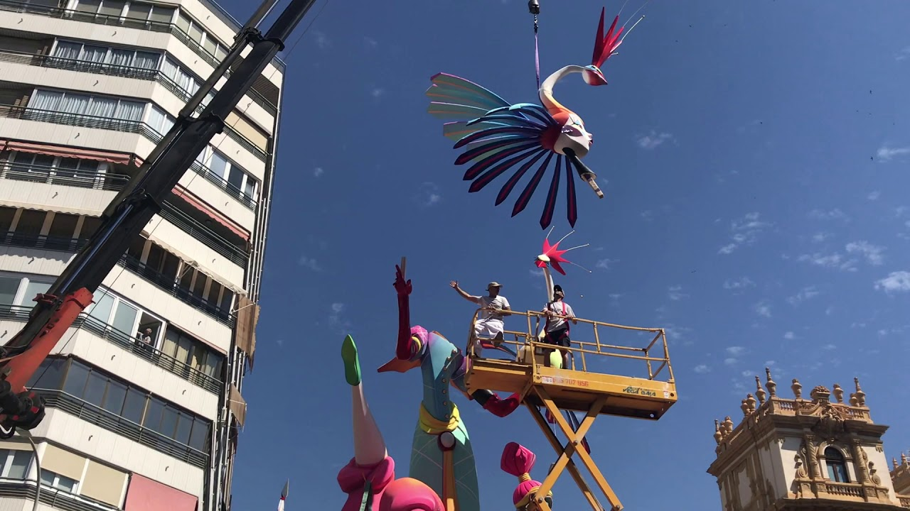
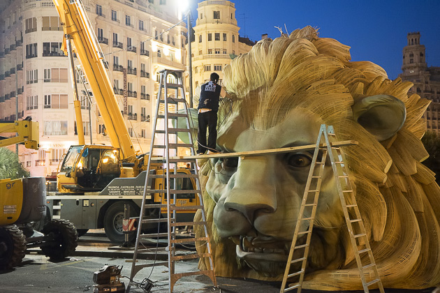

Web de las fiestas de Valencia
La plantà
Uno de los momentos más esperados por todos los falleros es la plantà. En ella, el artista fallero ayudado por los más trabajadores de la comisión fallera, terminan de montar el monumento y lo adornan para que esté bonito y convenza al jurado para que le den un premio. En teoría, la plantà es la noche del 15 al 16 de marzo para las fallas grandes, y el 15 de marzo a las 8 de la mañana para los infantiles. Sin embargo, si el monumento es muy grande, la plantá puede empezar con una semana o más días de antelación. Y aun no siendo grande, en la semana anterior a Fallas es fácil ver piezas de monumentos por las calles, aunque sin montar, y camiones transportando ninots. La noche de la plantà realmente es, por tanto, cuando se dan los últimos retoques a las fallas: se les arreglan los pequeños detalles como pintura que haya saltado, se montan los ninots que quedan pendientes de colocar, se colocan los carteles que explican las escenas, se añade algún adorno externo para que quede más bonita, etc. Tampoco se suele cumplir la hora oficial de empezar la plantà (las doce de la noche), porque el artista fallero tiene que recorrer todas las comisiones donde ha hecho la falla y puede llegar a cualquier hora, lo que ocasiona a veces que a las 9 ó 10 de la mañana del día 16 de marzo haya todavía falleros dando los últimos toques a su monumento.

Para montar una falla, antes que nada hay que poner arena en el sitio donde se plantará, para que el fuego no estropee el suelo (aunque de todas maneras, el asfalto se derrite en muchas ocasiones). Según se va montando la falla, se van colocando sacos de arena en la parte inferior para que quede bien fijada al suelo. Se ha dado el caso de fallas enormes que tenían incluso una base de cemento, pero esto sólo ocurre en casos muy extremos. Una vez colocada la parte central y las bases laterales, se sitúan los ninots, clavándolos con un palo de madera en su lugar. Mientras, se van colocando los carteles en valenciano que explican las fallas para que el público entienda mejor su significado.
Toda esta historia hay que hacer para plantar la falla grande. La falla infantil es más fácil: el artista fallero la suele traer el día 14, ya montada, al casal de la falla. Los falleros la guardan, y a las 8 de la mañana del día siguiente, la sacan y la ponen en su sitio. ¡Así de fácil! ¿No has visto nunca una plantà? Aquí tienes unos vídeos de Malalt de Falles para que veas cómo es: